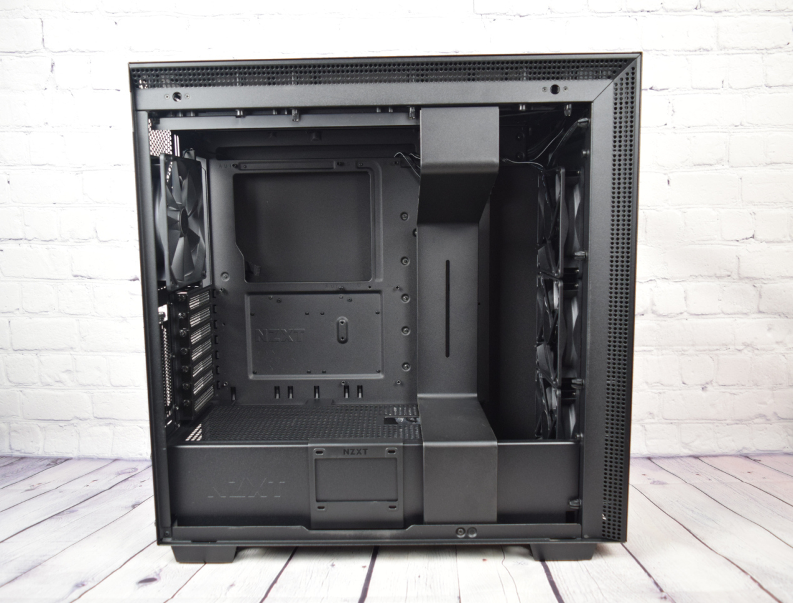
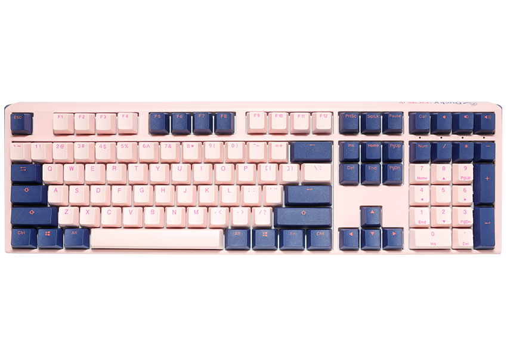

Computer Parts
The basic parts of a desktop computer are the computer case, monitor, keyboard, mouse, and power cord. Each part plays an important role whenever you use a computer.
|  |
Computer case
The computer case is the metal and plastic box that contains the main components of the computer, including the motherboard, central processing unit (CPU), and power supply. The front of the case usually has an On/Off button and one or more optical drives. |
|---|---|
|
Monitor
The monitor works with a video card, located inside the computer case, to display images and text on the screen. Most monitors have control buttons that allow you to change your monitor's display settings, and some monitors also have built-in speakers. |

|
|  |
Keyboard
The keyboard is one of the main ways to communicate with a computer. There are many different types of keyboards, but most are very similar and allow you to accomplish the same basic tasks. |
|
Mouse
The mouse is another important tool for communicating with computers. Commonly known as a pointing device, it lets you point to objects on the screen, click on them, and move them. |

|

|
Power Cord
A power cord, line cord, or mains cable is an electrical cable that temporarily connects an appliance to the mains electricity supply via a wall socket or extension cord. The terms are generally used for cables using a power plug to connect to a single-phase alternating current power source at the local line voltage (generally 100 to 240 volts, depending on the location). |